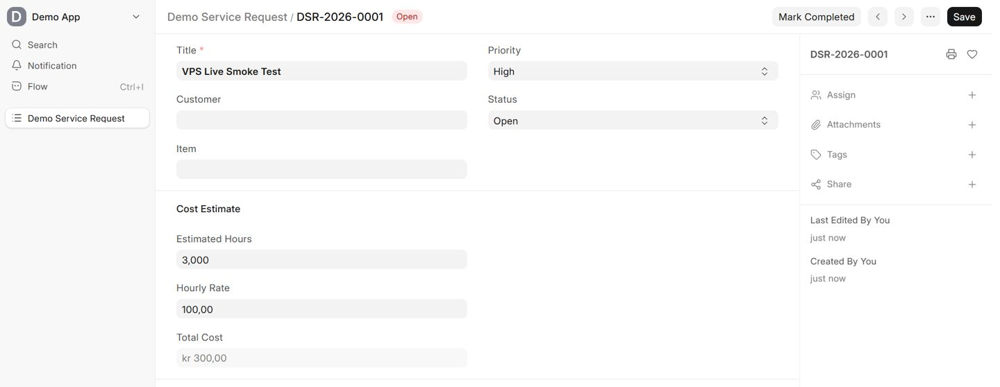

Every backup of the ERP is restored into a test copy and checked before anyone needs it.
Production is only ever read. Each new backup goes through the airlock on Vultr, and only a backup that passed lands in a test site.
Production ERP
demo.local
Frappe / ERPNext on Vultr, read only
Nightly backup
latest backup
BackupAirlockon Vultr, sandbox without network
Verify
checksum, readable dump, scan for code that runs on restore
Heal
old backup on a newer app: a GLM bridge maps the schema
Restore
full restore, record counts and business rules
Test copies
test.local
app v1
test2.local
app v2
Certificate
latest restorable
The ERP after the restore

test.local, the restored test copy: Demo Service Request DSR-2026-0001 as production holds it. Captured 27 Nov 16:35.